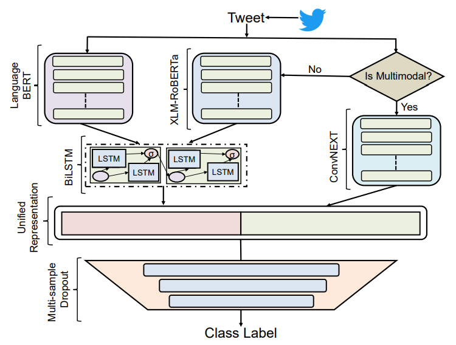
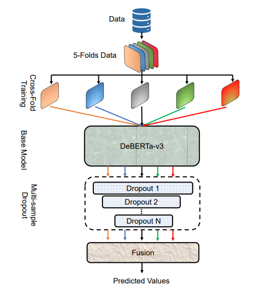
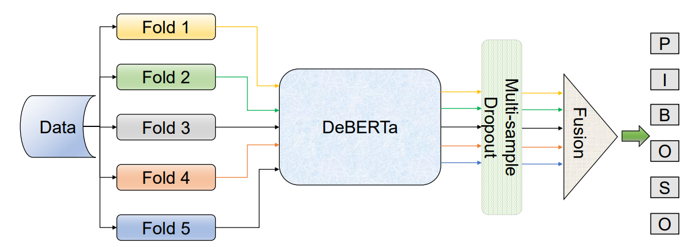
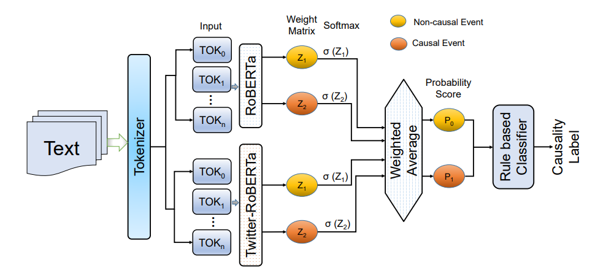
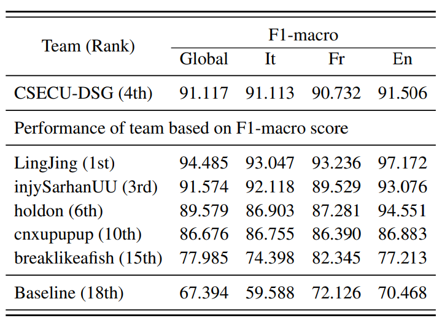
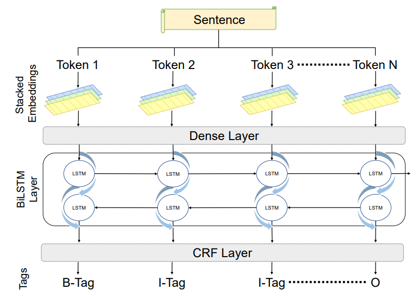
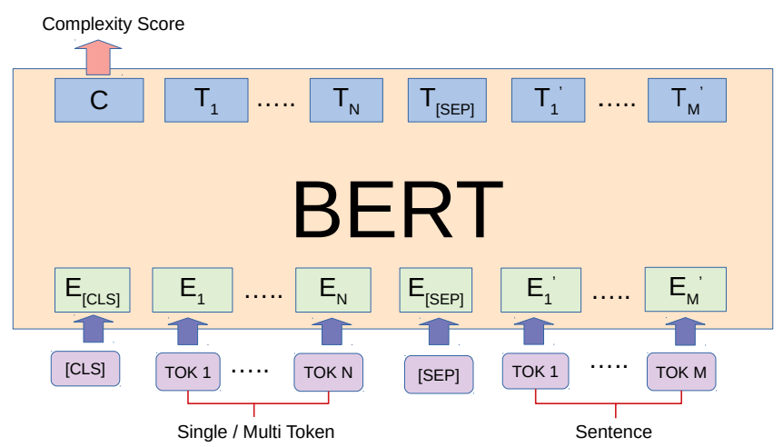
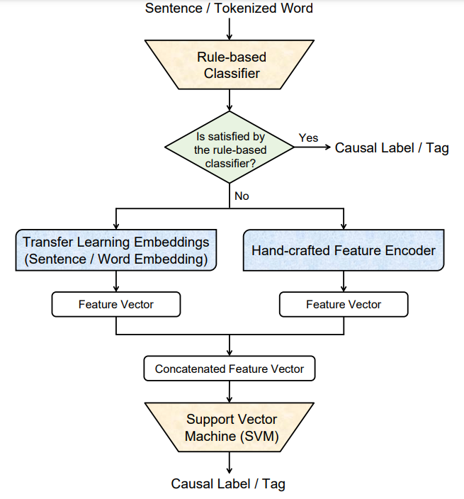

Publications
Filter by type:
Leveraging Contextual Representations with BiLSTM-based Regressor for Lexical Complexity Prediction. [Accepted]Journal PaperElsevier Natural Language Processing Journal, Vol. -, No. -, pp. -, 2023.
AbstractLexical complexity prediction (LCP) determines the complexity level of words or phrases in a sentence. LCP has a significant impact on the enhancement of language translations, readability assessment, and text generation. However, the domain-specific technical word, the complex grammatical structure, the polysemy problem, the inter-word relationship, and dependencies make it challenging to determine the complexity of words or phrases. In this paper, we propose an integrated transformer regressor model named ITRM-LCP to estimate the lexical complexity of words and phrases where diverse contextual features are extracted from various transformer models. The transformer models are fine-tuned using the text-pair data. Then, a bidirectional LSTM-based regressor module is plugged on top of each transformer to learn the long-term dependencies and estimate the complexity scores. The predicted scores of each module are then aggregated to determine the final complexity score. We assess our proposed model using two benchmark datasets from shared tasks. Experimental findings demonstrate that our ITRM-LCP model obtains 10.2% and 8.2% improvement on the news and Wikipedia corpus of the CWI-2018 dataset, compared to the top-performing systems (DAT, CAMB, and TMU). Additionally, our ITRM-LCP model surpasses state-of-the-art LCP systems (DeepBlueAI, JUST-BLUE) by 1.5% and 1.34% for single and multi-word LCP tasks defined in the SemEval LCP-2021 task. |
 |
MMTF-DES: A Fusion of Multimodal Transformer Models for Desire, Emotion, and Sentiment Analysis of Social Media Data [Undergrad Thesis Journal: In review]Journal PaperElsevier Information Fusion Journal, Vol. -, No. -, pp. -, 2023.
AbstractDesire is a set of human aspirations and wishes that comprise verbal and cognitive aspects that drive human feelings and behaviors, distinguishing humans from other animals. Understanding human desire has the potential to be one of the most fascinating and challenging research domains. It is tightly coupled with sentiment analysis and emotion recognition tasks. It is beneficial for increasing human-computer interactions, recognizing human emotional intelligence, understanding interpersonal relationships, and making decisions. However, understanding human desire is challenging and under-explored because ways of eliciting desire might be different among humans. The task gets more difficult due to the diverse cultures, countries, and languages. Prior studies overlooked the use of image-text pairwise feature representation, which is crucial for the task of human desire understanding. In this research, we have proposed a unified multimodal transformer-based framework with image-text pair settings to identify human desire, sentiment, and emotion. The core of our proposed method lies in the encoder module, which is built using two state-of-the-art multimodal transformer models. These models allow us to extract diverse features. To effectively extract visual and contextualized embedding features from social media image and text pairs, we conducted joint fine-tuning of two pre-trained multimodal transformer models: Vision-and-Language Transformer (ViLT) and Vision-and-Augmented-Language Transformer (VAuLT). Subsequently, we use an early fusion strategy on these embedding features to obtain combined diverse feature representations of the image-text pair. This consolidation incorporates diverse information about this task, enabling us to robustly perceive the context and image pair from multiple perspectives. Moreover, we leverage a multi-sample dropout mechanism to enhance the generalization ability and expedite the training process of our proposed method. To evaluate our proposed approach, we used the multimodal dataset MSED for the human desire understanding task. Through our experimental evaluation, we demonstrate that our method excels in capturing both visual and contextual information, resulting in superior performance compared to other state-of-the-art techniques. Specifically, our method outperforms existing approaches by 3% for sentiment analysis, 2.2% for emotion analysis, and approximately 1% for desire analysis. |
Multimodal Complaint Detection Using Sentiment and Emotion-Aided Multitask Contrastive Learning Model. [Submitted]Conference PaperEuropean Conference on Information Retrieval (ECIR '24), 2024.
Abstract |
Sentiment and Emotion Analysis Using Transformer-based Multi-task Contrastive Learning Model on Code-mixed Tweets. [Submitted]Conference PaperEuropean Conference on Information Retrieval (ECIR '24), 2024.
Abstract |
BiGCAT: An Integrated Graph Neural Network Model for Financial Named Entity Recognition. [Submitted]Conference PaperEuropean Conference on Information Retrieval (ECIR '24), 2024.
Abstract |
BengaliLCP: A Dataset for Lexical Complexity Prediction in the Bengali Texts. [Submitted]Conference PaperTHE 2024 JOINT INTERNATIONAL CONFERENCE ON COMPUTATIONAL LINGUISTICS, LANGUAGE
RESOURCES AND EVALUATION (LREC-COLLING '24), 2024.
Abstract |
 |
CSECU-DSG at CheckThat! 2023: Transformer-based Fusion Approach for Multimodal and Multigenre Check-Worthiness. [1st place]Workshop PaperCLEF workshop on Check-Worthiness, Subjectivity, Political Bias, Factuality, and Authority of News Articles and Their Sources (CheckThat!), 2023.
AbstractCheck-worthiness is identifying verifiable factual claims present or not in content. It might be beneficial to automatically verify the political discourses, social media posts, and newspaper content. However, the multifaceted nature and hidden meaning of the content make it difficult to automatically identify the factual claims. To address these challenges, CheckThat! 2023 introduced a task to build automatic Check-worthiness classifiers in tweets with multimodal and multigenre settings. This paper presented our participation in CheckThat! 2023 Task 1. We perform fine-tuning on language-specific and vision pretrained transformer models to extract the visual-contextualized or contextualized features representation for the multimodal and multigenre check-worthiness task. We add a BiLSTM layer on top of the contextual features and concatenate it with the other visual or contextualized features to get an enrich unified representation. Later, we employ a multi-sample dropout strategy to predict a more accurate class label. Experimental results show that our proposed method achieved competitive performance among the participants and obtained 1st place in the multimodal Arabic check-worthiness task. |
 |
CSECU-DSG at SemEval-2023 Task 4: Fine-tuning DeBERTa Transformer Model with Cross-fold Training and Multi-sample Dropout for Human Values Identification.Workshop PaperSemEval workshop on Multi-lingual Human Value Detection in Texts (ValueEval), 2023.
AbstractHuman values identification from a set of argument is becoming a prominent area of research in argument mining. Among some options, values convey what may be the most desirable and widely accepted answer. The diversity of human beliefs, random texture and implicit meaning within the arguments makes it more difficult to identify human values from the arguments. To address these challenges, SemEval-2023 Task 4 introduced a shared task ValueEval focusing on identifying human values categories based on given arguments. This paper presents our participation in this task where we propose a finetuned DeBERTa transformers-based classification approach to identify the desire human value category. We utilize different training strategy with the finetuned DeBERTa model to enhance contextual representation on this downstream task. Our proposed method achieved competitive performance among the participants’ methods. |
 |
Enhancing the DeBERTa Transformers Model for Classifying Sentences from Biomedical Abstracts. [2nd place]Workshop PaperALTA workshop on automatic sentence classifiers that can map the content of biomedical abstracts into a set of pre-defined categories, which are used for Evidence-Based Medicine (EBM), 2022.
AbstractEvidence-based medicine (EBM) is defined as making clinical decisions about individual patients based on the best available evidence. It is beneficial for making better clinical decisions, caring for patients and providing information about the therapy, prognosis, diagnosis, and other health care and clinical issues. However, it is a challenging task to build an automatic sentence classifier for EBM owing to a lack of clinical context, uncertainty in medical knowledge, difficulty in finding the best evidence, and domain-specific words in the abstract of medical articles. To address these challenges, ALTA 2022 introduced a task to build automatic sentence classifiers for EBM that can map the content of biomedical abstracts into a set of pre-defined categories. This paper presents our participation in this task where we propose a transformers based classification approach to identify the category of the content from biomedical abstracts. We perform fine-tuning on DeBERTa pre-trained transformers model to extract the contextualized features representation. Later, we employ a multi-sample dropout strategy and 5-fold cross fold training to predict more accurate class label. Experimental results show that our proposed method achieved the competitive performance among the participants. |
 |
CSECU-DSG @ Causal News Corpus 2022: Fusion of RoBERTa Transformers Variants for Causal Event Classification. [1st place]Workshop PaperCASE @ EMNLP | Challenges and Applications of Automated Extraction
of Socio-political Events from Text, 2022.
AbstractIdentifying cause-effect relationships in sentences is one of the formidable tasks to tackle the challenges of inference and understanding of natural language. However, the diversity of word semantics and sentence structure makes it challenging to determine the causal relationship effectively. To address these challenges, CASE-2022 shared task 3 introduced a task focusing on event causality identification with causal news corpus. This paper presents our participation in this task, especially in subtask 1 which is the causal event classification task. To tackle the task challenge, we propose a unified neural model through exploiting two fine-tuned transformer models including RoBERTa and Twitter-RoBERTa. For the score fusion, we combine the prediction scores of each component model using weighted arithmetic mean to generate the probability score for class label identification. The experimental results showed that our proposed method achieved the top performance (ranked 1st) among the participants. |
 |
CSECU-DSG at SemEval-2022 Task 3: Investigating the Taxonomic Relationship Between Two Arguments using Fusion of Multilingual Transformer Models. [4th place]Workshop PaperSemEval 2022 Task 3: PreTENS | identifying presupposed taxonomies.
AbstractRecognizing lexical relationships between words is one of the formidable tasks in computational linguistics. It plays a vital role in the improvement of various NLP tasks. However, the diversity of word semantics, sentence structure as well as word order information make it challenging to distill the relationship effectively. To address these challenges, SemEval-2022 Task 3 introduced a shared task PreTENS focusing on semantic competence to determine the taxonomic relations between two nominal arguments. This paper presents our participation in this task where we proposed an approach through exploiting an ensemble of multilingual transformer methods. We employed two fine-tuned multilingual transformer models including XLM-RoBERTa and mBERT to train our model. To enhance the performance of individual models, we fuse the predicted probability score of these two models using weighted arithmetic mean to generate a unified probability score. The experimental results showed that our proposed method achieved competitive performance among the participants’ methods. |
 |
CSECU-DSG at SemEval-2022 Task 11: Identifying the Multilingual Complex Named Entity in Text Using Stacked Embeddings and Transformer based Approach.Workshop PaperSemEval 2022 Task 11: MultiCoNER | Multilingual Complex Named Entity Recognition.
AbstractRecognizing complex and ambiguous named entities (NEs) is one of the formidable tasks in the NLP domain. However, the diversity of linguistic constituents, syntactic structure, semantic ambiguity as well as differences from traditional NEs make it challenging to identify the complex NEs. To address these challenges, SemEval-2022 Task 11 introduced a shared task MultiCoNER focusing on complex named entity recognition in multilingual settings. This paper presents our participation in this task where we propose two different approaches including a BiLSTM-CRF model with stacked-embedding strategy and a transformer-based approach. Our proposed method achieved competitive performance among the participants’ methods in a few languages. |
 |
CSECU-DSG at SemEval-2021 Task 1: Fusion of Transformer Models for Lexical Complexity Prediction.Workshop PaperSemEval 2021 Task 1: LCP | Lexical Complexity Prediction.
AbstractLexical complexity prediction (LCP) conveys the anticipation of the complexity level of a token or a set of tokens in a sentence. It plays a vital role in the improvement of various NLP tasks including lexical simplification, translations, and text generation. However, multiple meaning of a word in multiple circumstances, grammatical complex structure, and the mutual dependency of words in a sentence make it difficult to estimate the lexical complexity. To address these challenges, SemEval-2021 Task 1 introduced a shared task focusing on LCP and this paper presents our participation in this task. We proposed a transformer-based approach with sentence pair regression. We employed two fine-tuned transformer models. Including BERT and RoBERTa to train our model and fuse their predicted score to the complexity estimation. Experimental results demonstrate that our proposed method achieved competitive performance compared to the participants’ systems. |
 |
Feature Fusion with Hand-crafted and Transfer Learning Embeddings for Cause-Effect Relation Extraction. [1st place]Workshop PaperCEREX @ FIRE | Cause Effect Relation Extraction, ,2020.
AbstractCause-effect relation extraction is the problem of detecting causal relations expressed in a text. The extraction of causal-relations from texts might be beneficial for the improvement of various natural language processing (NLP) tasks including Q/A, text-summarization, opinion mining, and event analysis. However, cause-effect relation in the text is sparse, ambiguous, sometimes implicit, and has a linguistically complex construct. To address these challenges FIRE-2020 introduced a shared task focusing on cause-effect relation extraction (CEREX). We propose a feature based supervised classification model with a naive rule-based classifier. We define a set of rules based on a causal connective dictionary and stop-words. Besides, we use a fusion of hand-crafted features and transfer learning embeddings to train our SVM based supervised classification model. Experimental results exhibit that our proposed method achieved the topnotch performance for cause-effect relation extraction and causal word annotation. |